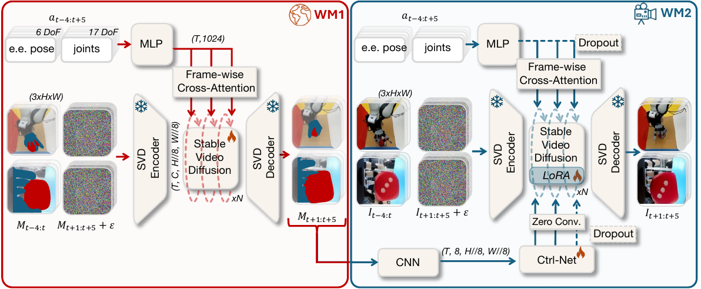
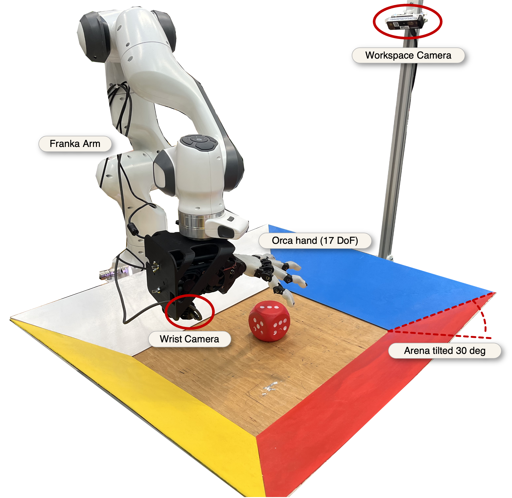
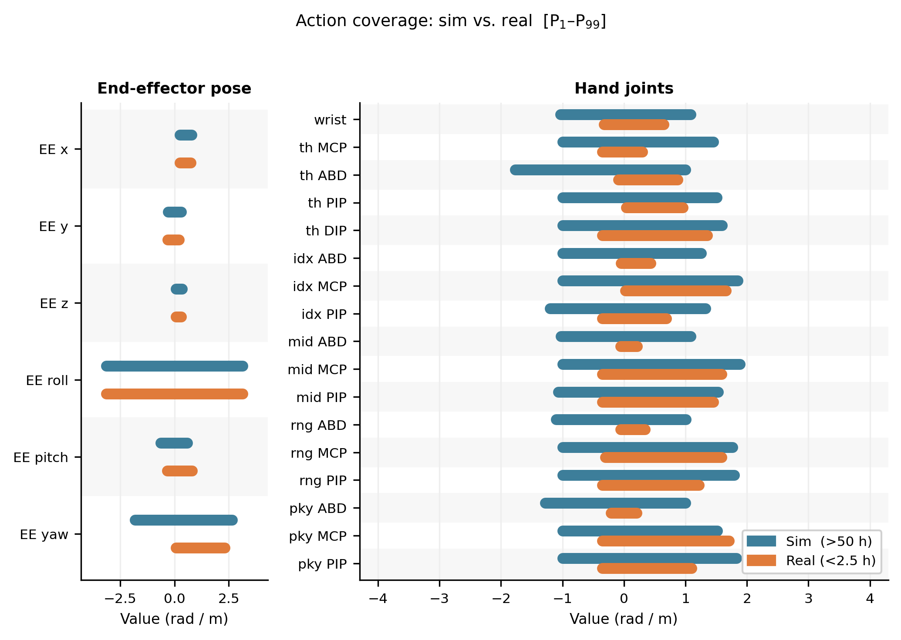
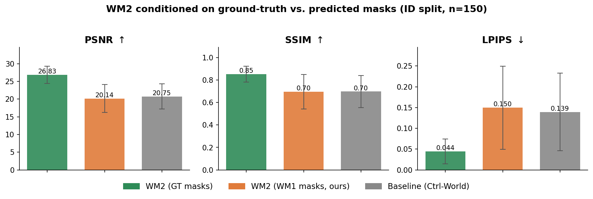

Overview video
A narrated tour of the method
Abstract
Decoupling dynamics from rendering
Learning action-conditioned world models for dexterous manipulation that are genuinely controllable requires capturing complex, high-dimensional hand kinematics from limited real-world data. We present Mask2Real-WM, a two-stage world model that improves controllability for dexterous hands under a limited real-data budget by decoupling pixel prediction into a dynamics model and a rendering model.
The dynamics model predicts future segmentation masks from past masks and a high-dimensional action sequence. The rendering model converts the predicted masks into photorealistic RGB images. This design allows us to train the dynamics model on a large synthetic dataset spanning the full range of hand motions and interactions. We then fine-tune the dynamics model and train the rendering model on only 2.5 h of real demonstrations to obtain a controllable world model.
We compare five models with matched training recipes on a 23-DoF robotic system, measuring per-DoF controllability both with random target commands and with sinusoidal per-DoF actuation, judged blind by human raters. The decoupled model achieves the strongest controllability, with further gains from simulation data. Beyond improved controllability, Mask2Real-WM produces sharper frames while maintaining comparable perceptual quality.
Action space
6DEE pose + 17handjoints = 23actiondims
A 6-D Cartesian end-effector pose and 17 ORCA hand-joint positions are driven as one action sequence: every action dimension conditions the dynamics model directly, rather than through a coarse end-effector proxy. (The physical robot has 24 actuated joint DoF: 7 in the arm, 17 in the hand; the arm is commanded in Cartesian end-effector space.)
Contributions
Three contributions
1 · A two-stage world model
We introduce Mask2Real-WM, a two-stage action-conditioned world model that decouples pixel prediction into mask dynamics and RGB rendering and uses the mask space as a sim-to-real bridge.
2 · Whole-pose and per-DoF control
We show substantial gains in whole-pose target following and independent per-DoF control on a 23-DoF robotic system: Mask2Real-WM wins 75% of non-tied human comparisons against the strongest monolithic model on random whole-pose targets, and scores higher on single-DoF command sweeps, with sharper frame predictions and without compromising perceptual quality on the evaluated videos.
3 · Training recipes and simulation data
We ablate training recipes and simulation data, showing that simulation training improves controllability in the decoupled model but reduces it in the monolithic model.
- Synthetic midtraining
- 53.7 hIsaac Lab simulation
- Real demonstrations
- 2.5 hAdaptation and rendering
- A/B win rate
- 75%Cascade-SR vs. Mono-R, non-tied votes
Key idea
Decouple what moves where from what it looks like
Dexterous hands are hard to control from limited data: conditioning on 23 action dimensions is more demanding than for parallel-jaw grippers, demonstrations tend to show joints moving together, and fine finger motion must still be resolved clearly. Mask2Real-WM reframes the problem as two more tractable subproblems, chained autoregressively at inference, the first of which can effectively use synthetic simulation data.
WM1 · Dynamics
Masks from actions
An action-conditioned video-diffusion model (SVD backbone) predicts future hand and object segmentation masks from past masks and the 23-DoF action sequence. The smaller sim-to-real gap in mask space enables midtraining on 53.7 h of simulation, followed by LoRA fine-tuning on real data.
WM2 · Rendering
RGB from masks
A ControlNet-augmented SVD backbone with LoRA paints photorealistic two-view RGB onto WM1's predicted masks. It is trained on real data only, since appearance is where the sim-to-real gap is largest. A lightweight CNN encodes the masks before ControlNet injection.
Segmentation as a bridge
Simulation supervises mask dynamics and real RGB supervises appearance, without requiring photorealistic simulation.
Action conditioning
End-effector pose and hand-joint commands pass through separate MLP branches, and their summed per-frame embeddings are injected via frame-wise cross-attention in both stages.
Automatic labels
SAM 3 produces segmentation pseudo-labels without manual per-frame annotation (wrist view initialized with a short auxiliary clip and a bounding box), supervising the intermediate representation at scale.
Method
A two-stage world model, told as a picture




Experiments
Stronger controllability at comparable perceptual quality
We evaluate Mask2Real-WM against monolithic baselines along two axes: geometric controllability of the rendered hand, and video and perceptual quality. Controllability is assessed with two human rating experiments, an A/B test on randomly sampled target commands and a scoring experiment on individually actuated fingers, and with a mask-overlap metric.
Platform and data
The robot platform combines a 7-DoF Franka Emika Panda arm with the 17-DoF ORCA hand, commanded through a 23-dimensional action space. The simulation corpus comprises 13,950 Isaac Lab episodes with ground-truth masks (53.7 h at 5 fps) over five objects. MimicGen expands about 100 teleoperated demonstrations into 10,000 episodes, a procedural generator adds 3,700 random-motion episodes, and a further 250 episodes are teleoperated directly. The real dataset comprises 218 episodes (2.5 h at 5 fps), teleoperated with a Rokoko glove, with masks pseudo-labeled by SAM 3.
The real demonstrations cover only a narrow range of the action space: the simulation corpus spans 2.1× the real range across the 17 hand joints and 1.5× across the end-effector pose, with the largest gap in finger abduction. Simulation midtraining exposes the dynamics model to this broader range of hand motions.
Baselines and training recipes
Table I lists five models, named by architecture and training data. Cascade denotes our two-stage Mask2Real-WM architecture and Mono the monolithic approach, which adapts Ctrl-World to the same 23-D action space. The suffixes R, S, and SR denote training on real data only, simulation data only, and simulation followed by real data. For Cascade variants the suffix refers to WM1; all three share the same WM2, trained only on real data.
| Model | Sim midtr. | Real FT | Mask decomp. | Gradient updates (sim / real) |
|---|---|---|---|---|
| Mono-R | – | ✓ | – | – / 22k |
| Mono-SR | ✓ | ✓ | – | 55k / 58k |
| Cascade-R | – | ✓ | ✓ | – / 15k |
| Cascade-S | ✓ | – | ✓ | 55k / – |
| Cascade-SR | ✓ | ✓ | ✓ | 55k / 45k |
Geometric controllability
We evaluate controllability in three ways. First, raters compare how closely the generated hand matches a commanded target posture: a trial samples a random 23-D target command, rolls the model out for 10 autoregressive steps (50 frames), and judges the final frame against a simulation-rendered reference. Raters are blind to model identity and answer A, B, or tie across 50 target scenes. Second, a sine-sweep study drives each of the 23 dimensions with one sinusoid cycle while the others are held fixed (1,150 rollouts); raters score 1 if only that dimension moves, 0.5 if it moves with unintended motion elsewhere, and 0 if it does not move. Third, for the mask-prediction models, we measure the intersection over union (IoU) between WM1's predicted hand mask and the simulator's target mask.
| Model | A/B win rate | Sine-sweep score | WM1 IoU |
|---|---|---|---|
| Mono-R | 35.3% [32.8, 37.8] | 0.77 ± 0.02 | – |
| Mono-SR | 16.4% [14.6, 18.4] | 0.75 ± 0.02 | – |
| Cascade-R | 40.8% [38.3, 43.4] | 0.79 ± 0.02 | 0.412 |
| Cascade-S | 35.3% [32.9, 37.8] | 0.81 ± 0.02 | 0.414 |
| Cascade-SR | 63.0% [60.5, 65.5] | 0.87 ± 0.01 | 0.447 |
Cascade-SR leads the human pairwise ranking by a wide margin. Mono-R, the strongest monolithic model, sits level with Cascade-S and below Cascade-R, and Mono-SR is last. Head-to-head tests on the non-tied votes give four results. First, decoupling helps at both budgets: every Mask2Real-WM variant beats Mono-SR, Cascade-SR in 94% of non-tied comparisons and Cascade-R beats Mono-R in 69%. Second, simulation midtraining has opposite effects: raters prefer Cascade-SR over Cascade-R (73%) and over Cascade-S (80%), but Mono-R over Mono-SR (74%). Third, the full model beats the strongest monolithic model: Cascade-SR over Mono-R, 75%. Fourth, simulation without the real-data stage is not enough: Cascade-S ties Mono-R and does not significantly differ from Cascade-R after correction.
The sine-sweep ratings give the same top of the ranking: Cascade-SR scores 0.87, about three standard errors of the difference above Cascade-S (0.81), while the other four models (0.81 to 0.75) lie within about two standard errors of each other. For hand-mask IoU, Cascade-SR exceeds Cascade-R by +0.035 (bootstrap 95% CI [0.029, 0.042]) and Cascade-S by +0.034 ([0.023, 0.044]), while Cascade-R and Cascade-S tie.
Video and perceptual quality
We assess video quality on held-out episodes, reporting results per camera view (Table III) with PSNR, SSIM, LPIPS, FID, FVD, and a sharpness measure given by the Laplacian variance of predicted frames relative to ground truth (1 = as sharp as ground truth).
| Model | Third-person view | Wrist view | ||||||||||
|---|---|---|---|---|---|---|---|---|---|---|---|---|
| PSNR↑ | SSIM↑ | LPIPS↓ | FVD↓ | FID↓ | Sharp.↑ | PSNR↑ | SSIM↑ | LPIPS↓ | FVD↓ | FID↓ | Sharp.↑ | |
| Mono-R | 24.08 ± 1.56 | 0.834 ± 0.028 | 0.052 ± 0.018 | 6.24 | 14.85 | 0.955 | 17.42 ± 1.07 | 0.559 ± 0.040 | 0.226 ± 0.045 | 11.71 | 26.52 | 0.872 |
| Mono-SR | 21.80 ± 1.95 | 0.770 ± 0.041 | 0.084 ± 0.027 | 8.82 | 24.20 | 0.897 | 15.94 ± 1.01 | 0.483 ± 0.041 | 0.285 ± 0.050 | 13.99 | 31.77 | 0.880 |
| Cascade-R | 24.11 ± 1.89 | 0.857 ± 0.031 | 0.045 ± 0.022 | 4.65 | 11.81 | 0.978 | 17.64 ± 1.41 | 0.587 ± 0.049 | 0.214 ± 0.057 | 9.13 | 22.03 | 0.994 |
| Cascade-S | 21.74 ± 1.98 | 0.779 ± 0.047 | 0.079 ± 0.028 | 7.67 | 16.78 | 0.966 | 14.78 ± 0.96 | 0.443 ± 0.046 | 0.318 ± 0.052 | 13.65 | 41.68 | 0.884 |
| Cascade-SR | 23.74 ± 1.86 | 0.843 ± 0.033 | 0.059 ± 0.026 | 5.30 | 13.39 | 0.979 | 16.54 ± 1.23 | 0.548 ± 0.045 | 0.240 ± 0.054 | 9.60 | 23.32 | 0.956 |
Cascade-SR is on par with the strongest monolithic model. In the third-person view it is within 0.3 PSNR of Mono-R with higher SSIM; in the wrist view it trails by 0.9 PSNR and 0.014 LPIPS; it is better on FVD and FID in both views. Against Mono-SR it is better on every metric in both views. Cascade-R achieves the best video-quality metrics in both views but has lower controllability scores than Cascade-SR, a trade-off that may partly reflect its full-weight training of WM1 on real data alone. Simulation midtraining also reduces perceptual quality in the monolithic model: Mono-SR scores worse than Mono-R on every pixel and distribution metric in both views, despite receiving more real-data training steps.
Wrist-view PSNR is 5.9 to 7.2 dB lower than third-person PSNR for every model. The wrist camera moves with the hand, and the three-class mask does not encode motion within the background region; action conditioning supplies WM2 with additional motion information. Consistent with this, removing WM2's action conditioning costs 0.024 LPIPS in the wrist view but 0.003 in the third-person view.
The monolithic models' pixel scores coincide with blur: in the wrist view Mono-R and Mono-SR render at 0.87× and 0.88× ground-truth sharpness against 0.96× for Cascade-SR and 0.99× for Cascade-R, and Cascade-SR is sharper than Mono-SR in 93% of samples and than Mono-R in 87% of wrist-view samples. Pixel metrics can favor averaged predictions.
Failure modes and discussion
Two recurring failure modes originate in WM1's object-state prediction: under hand occlusion the object mask is sometimes dropped, leaving an empty scene, and the object is occasionally duplicated or respawned elsewhere. Both show that object permanence is what limits long autoregressive deployment; examples are shown in Appendix E.
The comparisons show improved controllability with mask decomposition under both real-only training and simulation midtraining followed by real-data fine-tuning. Simulation midtraining further benefits the mask dynamics model but reduces controllability in the monolithic model. The simulation uses no material, lighting, or texture tuning, so the appearance gap between simulated and real RGB may contribute to the monolithic model's degradation. These results support learning dynamics in mask space, with real RGB supervision reserved for the rendering model.
Results from the earlier protocol (ID/OOD sinusoidal controllability, long-horizon and policy rollouts, and the interactive demo) are collected in the supplementary material.
Limitations
Where the system still falls short
Evaluation scope. This study uses a single physical scene with data collected on a single pick-and-place task. Robustness to distribution shift, such as new objects or scene changes, is left to future work. Moreover, the effect of the improved controllability on downstream tasks like planning or policy evaluation has not been tested.
Judging. The pooled tests treat every vote as an independent trial and do not model variation between raters. The nonsignificant differences between Cascade-R and Cascade-S, and between Cascade-S and Mono-R, should be interpreted cautiously; they do not establish equivalence.
Pseudo-labeling. The segmentation-mask supervision relies on SAM 3 pseudo-labels, which may contain boundary or classification errors. This effect is most pronounced for WM2, which is trained on real data only.
Model. WM1 receives no depth input and drops occluded objects; depth conditioning is a natural remedy. A background or depth channel added to the mask vocabulary would also give WM2 the egomotion cue it currently lacks in the wrist view. The color-class mask does not encode object identity; object-ID or text-prompt conditioning could help preserve identity over long horizons. A natural next baseline pairs a kinematically rendered (forward-kinematics) hand mask with a learned object-mask predictor.
Future work. Other directions include conditioning on camera intrinsics and extrinsics to remove the fixed-viewpoint assumption. Moreover, two sequential diffusion passes are computationally expensive; distillation into few-step samplers is the natural route to real-time rollouts.
Open source
Code, models and data
The code, the model checkpoints and two companion repositories are public. The dataset is not released yet.
Code ↗
Training, inference and evaluation code. The README covers installation, the checkpoint table, the dataset format and example commands. MIT licence.
Checkpoints ↗
Eight checkpoints, about 77 GB: WM1 for Cascade-R, Cascade-S and Cascade-SR, the shared WM2, Mono-R, Mono-SR (two training steps) and the simulation-only stage of Mono-SR. They derive from Stable Video Diffusion and are under the Stability AI Community License.
Powered by Stability AI
Simulation ↗
Isaac Lab extension for the ORCA hand on a Franka arm: simulation data generation (random motion, MimicGen, teleoperation), export to LeRobot format, and the ground-truth renderer of the controllability evaluation. MIT licence.
Mask labeling ↗
The SAM 3 based pipeline that produces the hand and object segmentation masks of the real recordings. Licence: see the repository.
Dataset
Not released yet.
BibTeX
Cite this work
@article{feingold2026mask2realwm,
title = {Mask2Real-WM: Controllable Dexterous World Models via Segmentation Masks as a Sim-to-Real Bridge},
author = {Feingold, Riccardo O. and Liconti, Davide and Yang, Chenyu and Katzschmann, Robert K.},
journal = {arXiv preprint arXiv:2607.04546},
year = {2026}
}